2025 Higher Biology - Paper 2 questions
Source: Scottish Qualifications Authority (SQA) / Qualifications Scotland. This is a StemInteract HTML companion, not an official HTML edition. Selectable text is supplied alongside original page images. Use the images or original PDF for equations, powers, fractions, vector notation, tables and diagrams; text extraction cannot fully preserve mathematical layout.
Jump to a question
PDF page 1
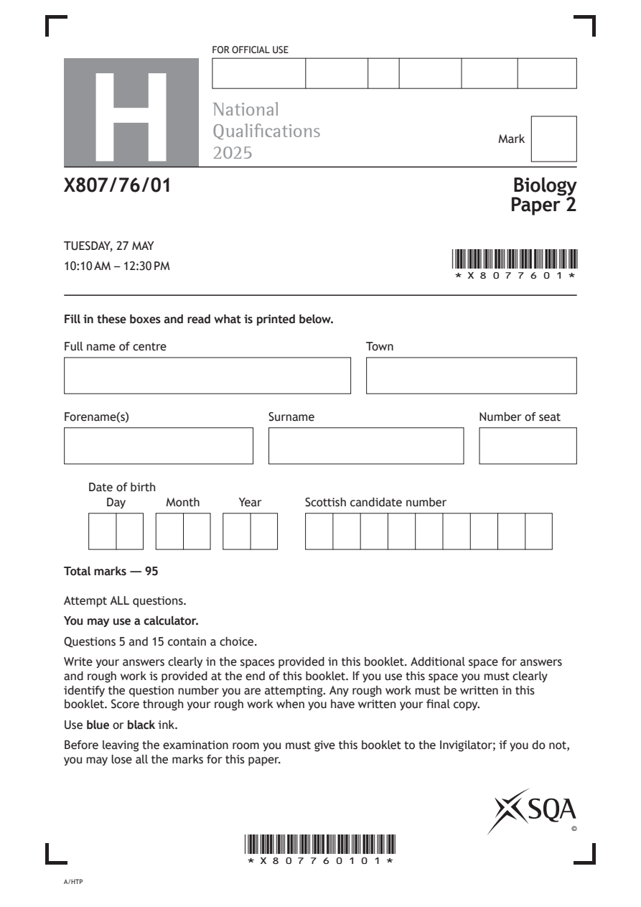
Selectable page text
FOR OFFICIAL USE
H
National
Qualications
Mark
2025
X807/76/01 Biology
Paper 2
TUESDAY, 27 MAY
10:10 AM – 12:30 PM
*X8077601*
Fill in these boxes and read what is printed below.
Full name of centre Town
Forename(s) Surname Number of seat
Date of birth
Day Month Year Scottish candidate number
Total marks — 95
Attempt ALL questions.
You may use a calculator.
Questions 5 and 15 contain a choice.
Write your answers clearly in the spaces provided in this booklet. Additional space for answers
and rough work is provided at the end of this booklet. If you use this space you must clearly
identify the question number you are attempting. Any rough work must be written in this
booklet. Score through your rough work when you have written your final copy.
Use blue or black ink.
Before leaving the examination room you must give this booklet to the Invigilator; if you do not,
you may lose all the marks for this paper.
©
*X807760101*
A/HTPPDF page 2
Paper 2, Question 1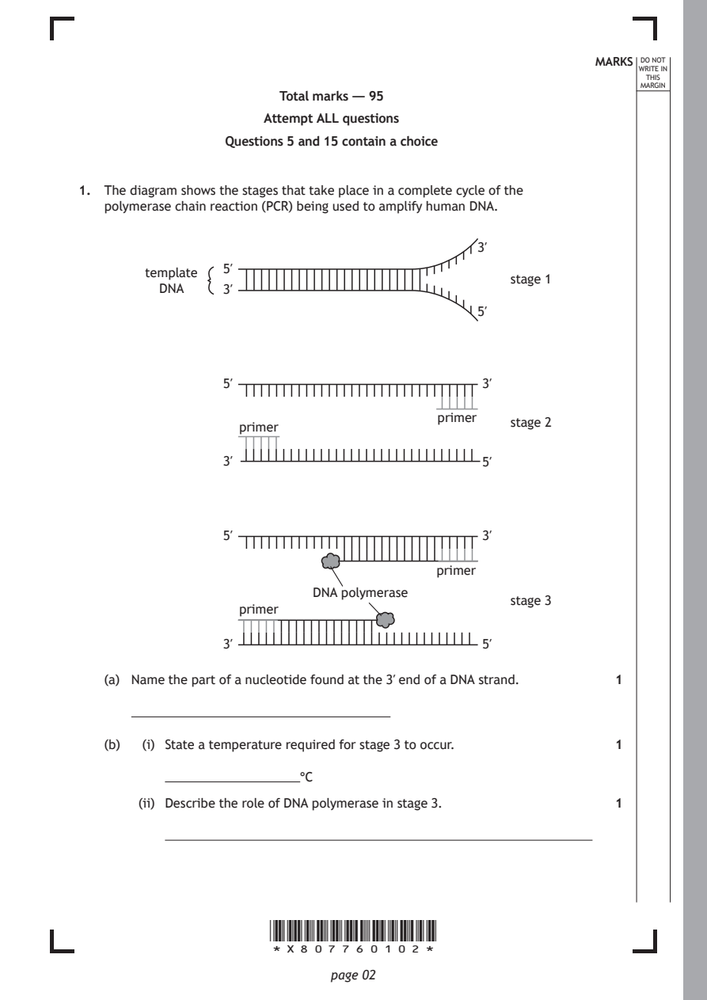
Selectable page text
MARKS _{W}^{D}_{R}^{O}_{I} _{T}^{N}OT
E IN
THIS
MARGIN
Total marks — 95
Attempt ALL questions
Questions 5 and 15 contain a choice
1. The diagram shows the stages that take place in a complete cycle of the
polymerase chain reaction (PCR) being used to amplify human DNA.
3′
5′
template
stage 1
DNA 3′
5′
5′ 3′
primer
stage 2
primer
3′ 5′
5′ 3′
primer
DNA polymerase
stage 3
primer
3′ 5′
(a) Name the part of a nucleotide found at the 3′ end of a DNA strand. 1
(b) (i) State a temperature required for stage 3 to occur. 1
�������������������������������������°C
(ii) Describe the role of DNA polymerase in stage 3. 1
*X807760102*
page 02PDF page 3
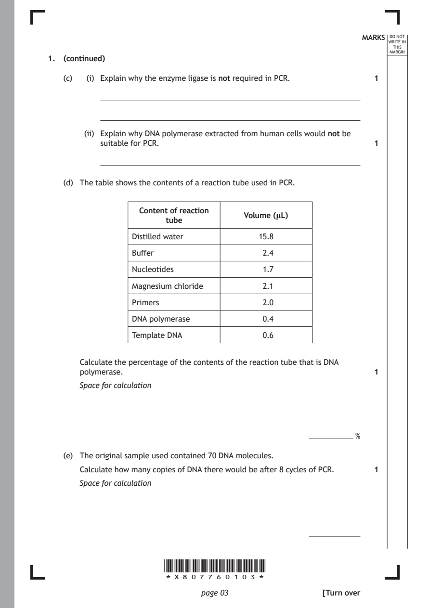
Selectable page text
MARKS _{W}^{D}_{R}^{O}_{I} _{T}^{N}OT
E IN
THIS
MARGIN
1. (continued)
(c) (i) Explain why the enzyme ligase is not required in PCR. 1
(ii) Explain why DNA polymerase extracted from human cells would not be
suitable for PCR. 1
(d) The table shows the contents of a reaction tube used in PCR.
Content of reaction
Volume (μL)
tube
Distilled water 15.8
Buffer 2.4
Nucleotides 1.7
Magnesium chloride 2.1
Primers 2.0
DNA polymerase 0.4
Template DNA 0.6
Calculate the percentage of the contents of the reaction tube that is DNA
polymerase. 1
Space for calculation
�������������������� %
(e) The original sample used contained 70 DNA molecules.
Calculate how many copies of DNA there would be after 8 cycles of PCR. 1
Space for calculation
*X807760103*
page 03 [Turn overPDF page 4
Paper 2, Question 2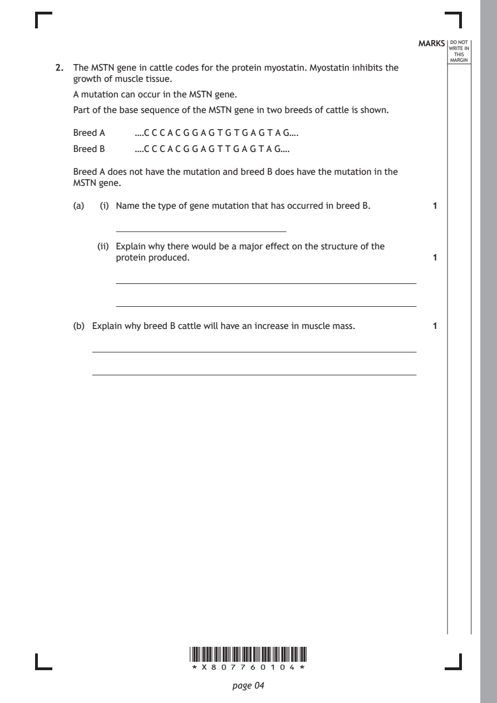
Selectable page text
MARKS _{W}^{D}_{R}^{O}_{I} _{T}^{N}OT
E IN
THIS
MARGIN
2. The MSTN gene in cattle codes for the protein myostatin. Myostatin inhibits the
growth of muscle tissue.
A mutation can occur in the MSTN gene.
Part of the base sequence of the MSTN gene in two breeds of cattle is shown.
Breed A ….C C C A C G G A G T G T G A G T A G….
Breed B ….C C C A C G G A G T T G A G T A G….
Breed A does not have the mutation and breed B does have the mutation in the
MSTN gene.
(a) (i) Name the type of gene mutation that has occurred in breed B. 1
(ii) Explain why there would be a major effect on the structure of the
protein produced. 1
(b) Explain why breed B cattle will have an increase in muscle mass. 1
*X807760104*
page 04PDF page 5
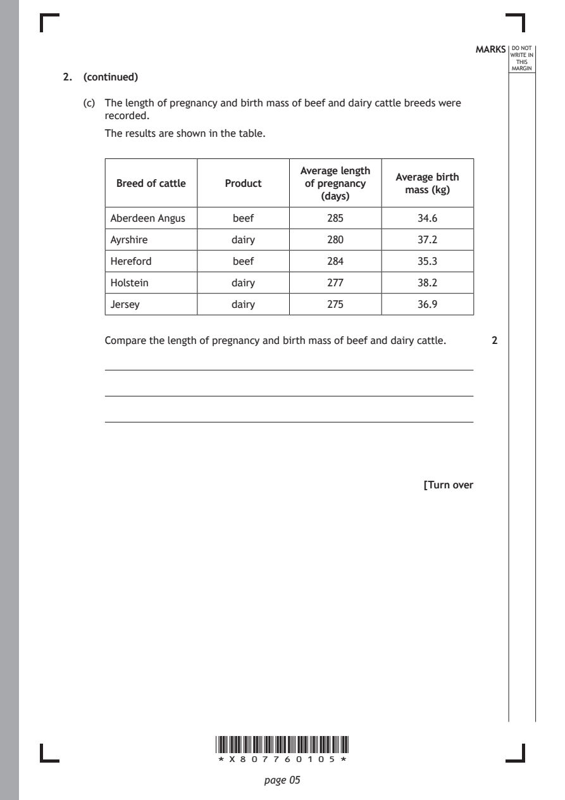
Selectable page text
MARKS _{W}^{D}_{R}^{O}_{I} _{T}^{N}OT
E IN
THIS
MARGIN
2. (continued)
(c) The length of pregnancy and birth mass of beef and dairy cattle breeds were
recorded.
The results are shown in the table.
Average length
Average birth
Breed of cattle Product of pregnancy
mass (kg)
(days)
Aberdeen Angus beef 285 34.6
Ayrshire dairy 280 37.2
Hereford beef 284 35.3
Holstein dairy 277 38.2
Jersey dairy 275 36.9
Compare the length of pregnancy and birth mass of beef and dairy cattle. 2
[Turn over
*X807760105*
page 05PDF page 6
Paper 2, Question 3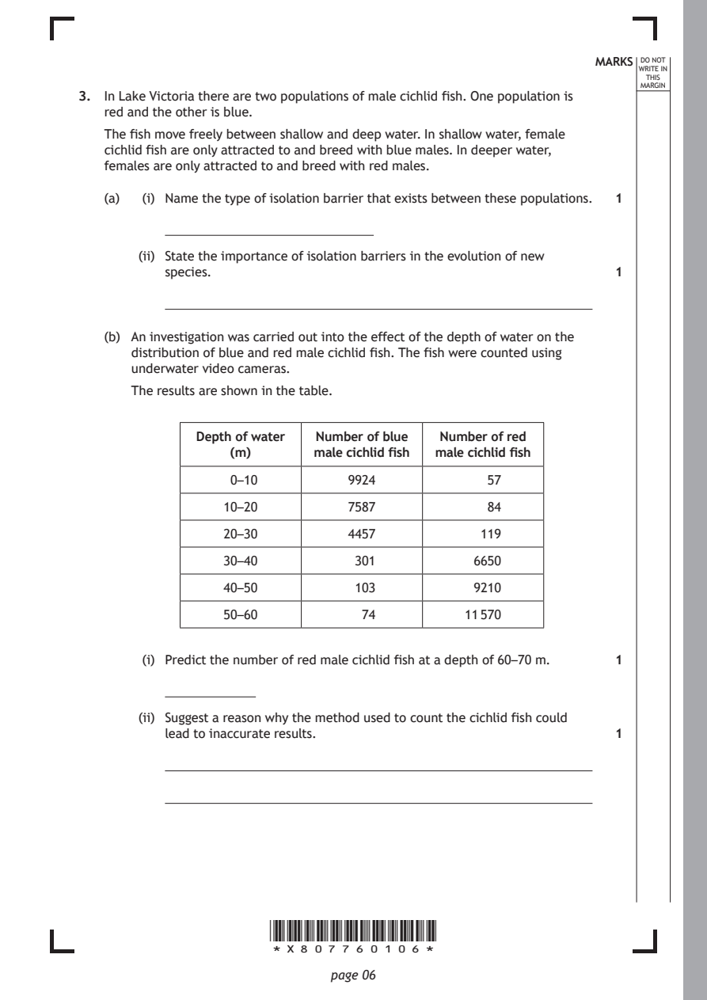
Selectable page text
MARKS _{W}^{D}_{R}^{O}_{I} _{T}^{N}OT
E IN
THIS
MARGIN
3. In Lake Victoria there are two populations of male cichlid fish. One population is
red and the other is blue.
The fish move freely between shallow and deep water. In shallow water, female
cichlid fish are only attracted to and breed with blue males. In deeper water,
females are only attracted to and breed with red males.
(a) (i) Name the type of isolation barrier that exists between these populations. 1
(ii) State the importance of isolation barriers in the evolution of new
species. 1
(b) An investigation was carried out into the effect of the depth of water on the
distribution of blue and red male cichlid fish. The fish were counted using
underwater video cameras.
The results are shown in the table.
Depth of water Number of blue Number of red
(m) male cichlid fish male cichlid fish
0–10 9924 57
10–20 7587 84
20–30 4457 119
30–40 301 6650
40–50 103 9210
50–60 74 11 570
(i) Predict the number of red male cichlid fish at a depth of 60–70 m. 1
(ii) Suggest a reason why the method used to count the cichlid fish could
lead to inaccurate results. 1
*X807760106*
page 06PDF page 7
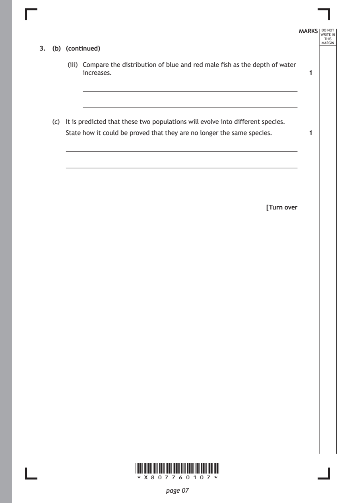
Selectable page text
MARKS _{W}^{D}_{R}^{O}_{I} _{T}^{N}OT
E IN
THIS
MARGIN
3. (b) (continued)
(iii) Compare the distribution of blue and red male fish as the depth of water
increases. 1
(c) It is predicted that these two populations will evolve into different species.
State how it could be proved that they are no longer the same species. 1
[Turn over
*X807760107*
page 07PDF page 8
Paper 2, Question 4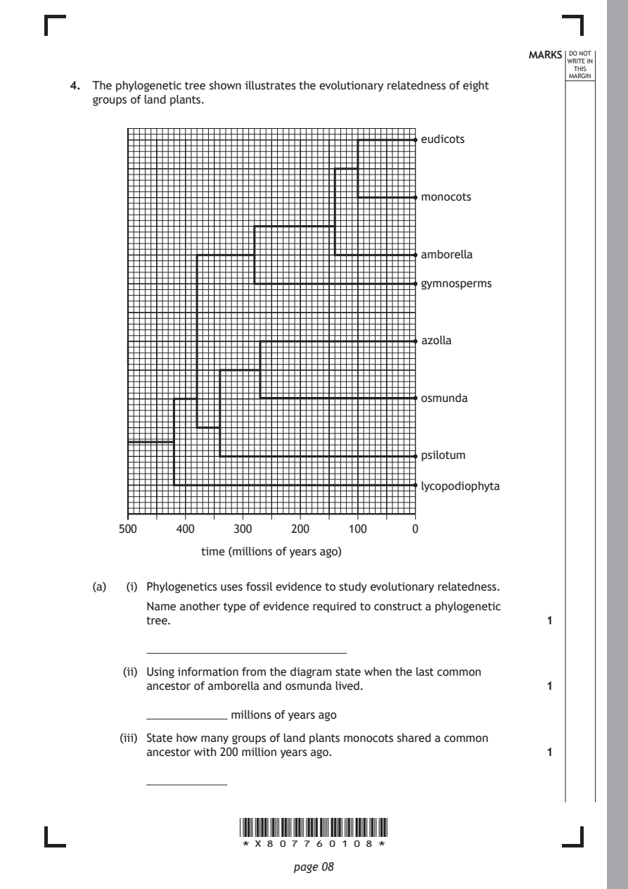
Selectable page text
MARKS _{W}^{D}_{R}^{O}_{I} _{T}^{N}OT
E IN
THIS
MARGIN
4. The phylogenetic tree shown illustrates the evolutionary relatedness of eight
groups of land plants.
eudicots
monocots
amborella
gymnosperms
azolla
osmunda
psilotum
lycopodiophyta
500 400 300 200 100 0
time (millions of years ago)
(a) (i) Phylogenetics uses fossil evidence to study evolutionary relatedness.
Name another type of evidence required to construct a phylogenetic
tree. 1
(ii) Using information from the diagram state when the last common
ancestor of amborella and osmunda lived. 1
������������������������� millions of years ago
(iii) State how many groups of land plants monocots shared a common
ancestor with 200 million years ago. 1
*X807760108*
page 08PDF page 9
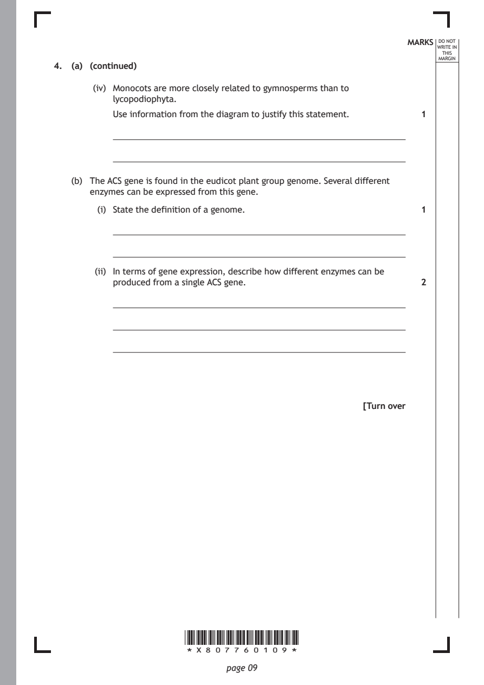
Selectable page text
MARKS _{W}^{D}_{R}^{O}_{I} _{T}^{N}OT
E IN
THIS
MARGIN
4. (a) (continued)
(iv) Monocots are more closely related to gymnosperms than to
lycopodiophyta.
Use information from the diagram to justify this statement. 1
(b) The ACS gene is found in the eudicot plant group genome. Several different
enzymes can be expressed from this gene.
(i) State the definition of a genome. 1
(ii) In terms of gene expression, describe how different enzymes can be
produced from a single ACS gene. 2
[Turn over
*X807760109*
page 09PDF page 10
Paper 2, Question 5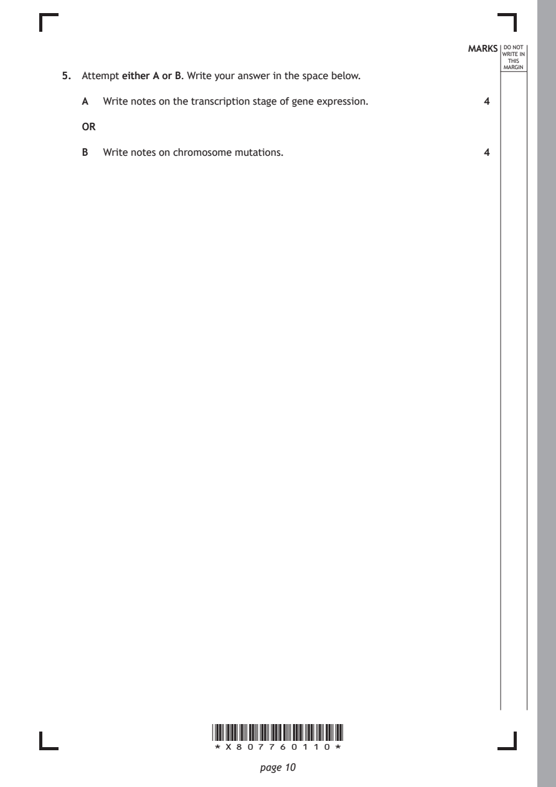
Selectable page text
MARKS _{W}^{D}_{R}^{O}_{I} _{T}^{N}OT
E IN
THIS
MARGIN
5. Attempt either A or B. Write your answer in the space below.
A Write notes on the transcription stage of gene expression. 4
OR
B Write notes on chromosome mutations. 4
*X807760110*
page 10PDF page 11
Paper 2, Question 6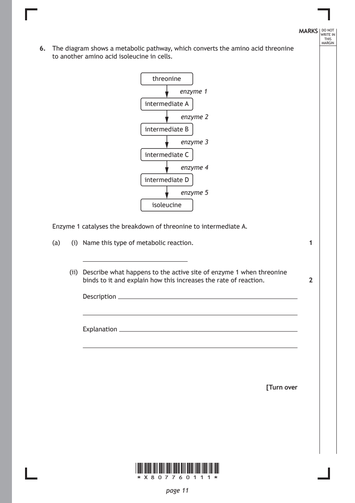
Selectable page text
MARKS _{W}^{D}_{R}^{O}_{I} _{T}^{N}OT
E IN
THIS
MARGIN
6. The diagram shows a metabolic pathway, which converts the amino acid threonine
to another amino acid isoleucine in cells.
threonine
enzyme 1
intermediate A
enzyme 2
intermediate B
enzyme 3
intermediate C
enzyme 4
intermediate D
enzyme 5
isoleucine
Enzyme 1 catalyses the breakdown of threonine to intermediate A.
(a) (i) Name this type of metabolic reaction. 1
(ii) Describe what happens to the active site of enzyme 1 when threonine
binds to it and explain how this increases the rate of reaction. 2
Description
Explanation
[Turn over
*X807760111*
page 11PDF page 12
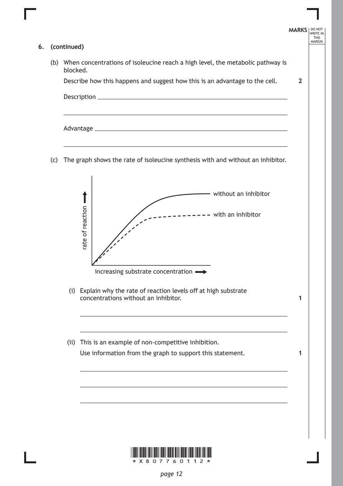
Selectable page text
MARKS _{W}^{D}_{R}^{O}_{I} _{T}^{N}OT
E IN
THIS
MARGIN
6. (continued)
(b) When concentrations of isoleucine reach a high level, the metabolic pathway is
blocked.
Describe how this happens and suggest how this is an advantage to the cell.
Description
Advantage
(c) The graph shows the rate of isoleucine synthesis with and without an inhibitor.
without an inhibitor
with an inhibitor
*X807760112*
page 12
noitcaer
fo
etar
2
increasing substrate concentration
(i) Explain why the rate of reaction levels off at high substrate
concentrations without an inhibitor. 1
(ii) This is an example of non-competitive inhibition.
Use information from the graph to support this statement. 1PDF page 13
Paper 2, Question 7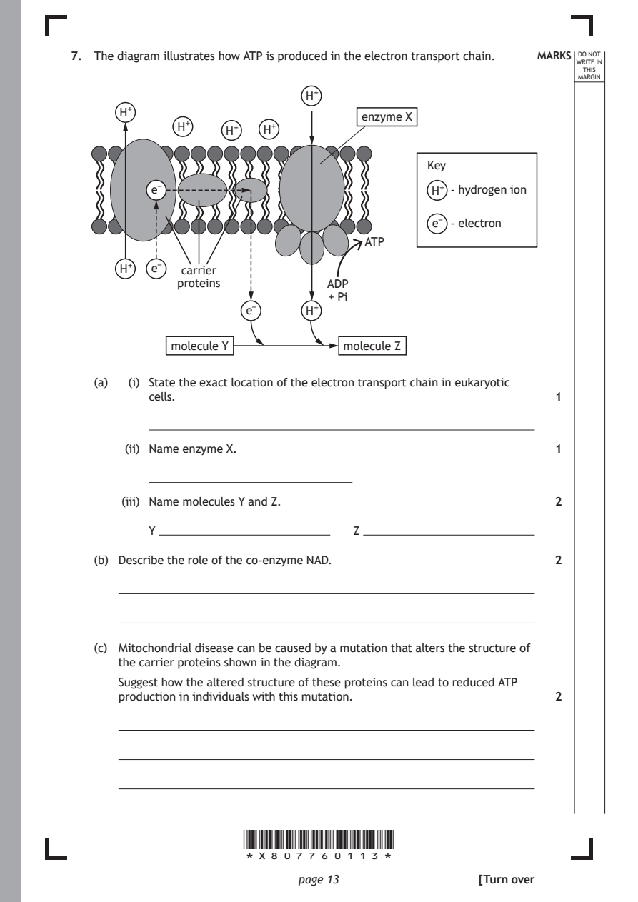
Selectable page text
7. The diagram illustrates how ATP is produced in the electron transport chain. MARKS _{W}^{D}_{R}^{O}_{I} _{T}^{N}OT
E IN
THIS
MARGIN
H⁺
H⁺
enzyme X
H⁺ H⁺ H⁺
Key
e^{–} H⁺ - hydrogen ion
e^{–} - electron
ATP
H⁺ e^{–} carrier
proteins ADP
+ Pi
e^{–} H⁺
molecule Y molecule Z
(a) (i) State the exact location of the electron transport chain in eukaryotic
cells. 1
(ii) Name enzyme X. 1
(iii) Name molecules Y and Z. 2
Y ���������������������������������������������������� Z ����������������������������������������������������
(b) Describe the role of the co-enzyme NAD. 2
(c) Mitochondrial disease can be caused by a mutation that alters the structure of
the carrier proteins shown in the diagram.
Suggest how the altered structure of these proteins can lead to reduced ATP
production in individuals with this mutation. 2
*X807760113*
page 13 [Turn overPDF page 14
Paper 2, Question 8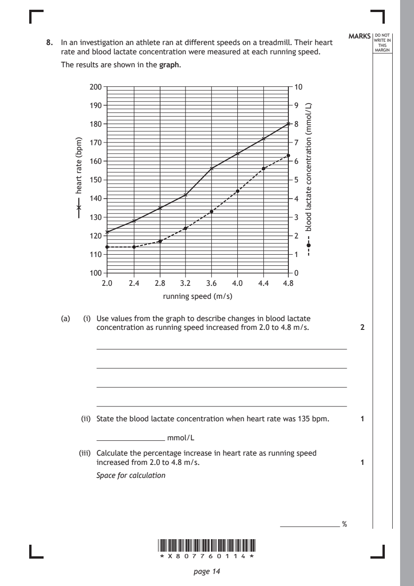
Selectable page text
MARKS _{W}^{D}_{R}^{O}_{I} _{T}^{N}OT
8. In an investigation an athlete ran at different speeds on a treadmill. Their heart E IN
THIS
rate and blood lactate concentration were measured at each running speed. MARGIN
The results are shown in the graph.
200 10
190 9
180 8
170 7
160 6
150 5
140 4
130 3
120 2
110 1
100 0
2.0 2.4 2.8 3.2 3.6 4.0 4.4 4.8
*X807760114*
page 14
)mpb(
etar
traeh
)L/lomm(
noitartnecnoc
etatcal
doolb
running speed (m/s)
(a) (i) Use values from the graph to describe changes in blood lactate
concentration as running speed increased from 2.0 to 4.8 m/s. 2
(ii) State the blood lactate concentration when heart rate was 135 bpm. 1
�������������������������������� mmol/L
(iii) Calculate the percentage increase in heart rate as running speed
increased from 2.0 to 4.8 m/s. 1
Space for calculation
���������������������������� %PDF page 15
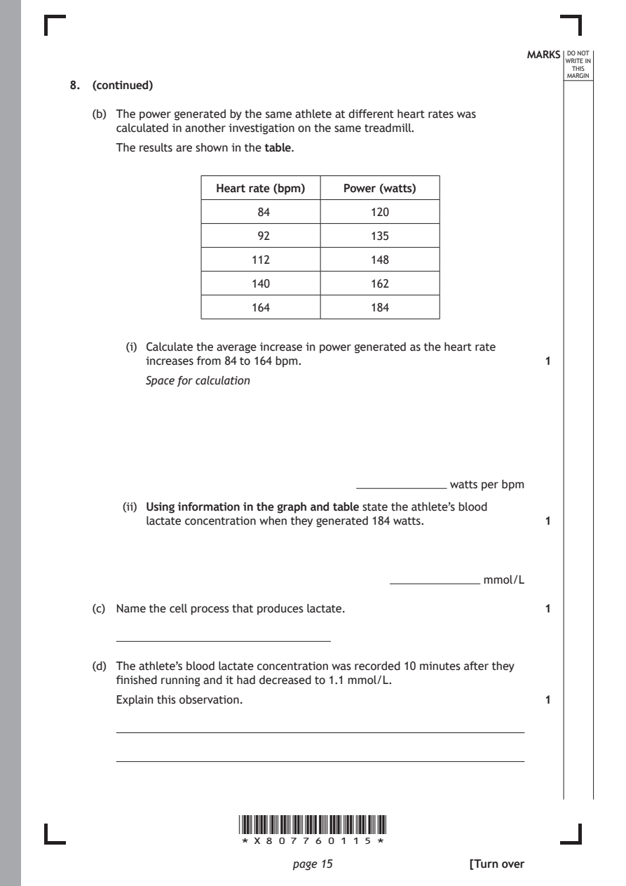
Selectable page text
MARKS _{W}^{D}_{R}^{O}_{I} _{T}^{N}OT
E IN
THIS
MARGIN
8. (continued)
(b) The power generated by the same athlete at different heart rates was
calculated in another investigation on the same treadmill.
The results are shown in the table.
Heart rate (bpm) Power (watts)
84 120
92 135
112 148
140 162
164 184
(i) Calculate the average increase in power generated as the heart rate
increases from 84 to 164 bpm. 1
Space for calculation
���������������������������� watts per bpm
(ii) Using information in the graph and table state the athlete’s blood
lactate concentration when they generated 184 watts. 1
���������������������������� mmol/L
(c) Name the cell process that produces lactate. 1
(d) The athlete’s blood lactate concentration was recorded 10 minutes after they
finished running and it had decreased to 1.1 mmol/L.
Explain this observation. 1
*X807760115*
page 15 [Turn overPDF page 16
Paper 2, Question 9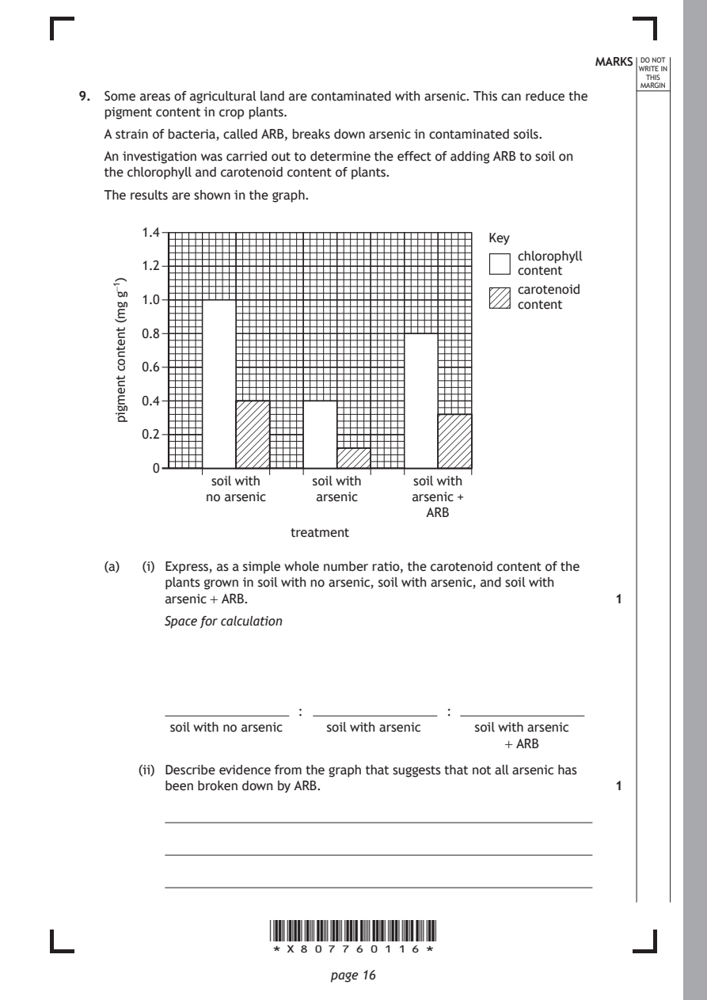
Selectable page text
MARKS _{W}^{D}_{R}^{O}_{I} _{T}^{N}OT
E IN
THIS
MARGIN
9. Some areas of agricultural land are contaminated with arsenic. This can reduce the
pigment content in crop plants.
A strain of bacteria, called ARB, breaks down arsenic in contaminated soils.
An investigation was carried out to determine the effect of adding ARB to soil on
the chlorophyll and carotenoid content of plants.
The results are shown in the graph.
1.4
chlorophyll
1.2
content
1.0
0.8
0.6
0.4
0.2
0
treatment
*X807760116*
page 16
_
)1
g
gm(
tnetnoc
tnemgip
Key
carotenoid
content
soil with soil with soil with
no arsenic arsenic arsenic +
ARB
(a) (i) Express, as a simple whole number ratio, the carotenoid content of the
plants grown in soil with no arsenic, soil with arsenic, and soil with
arsenic + ARB. 1
Space for calculation
���������������������������������� : ���������������������������������� : ����������������������������������
soil with no arsenic soil with arsenic soil with arsenic
+ ARB
(ii) Describe evidence from the graph that suggests that not all arsenic has
been broken down by ARB. 1PDF page 17
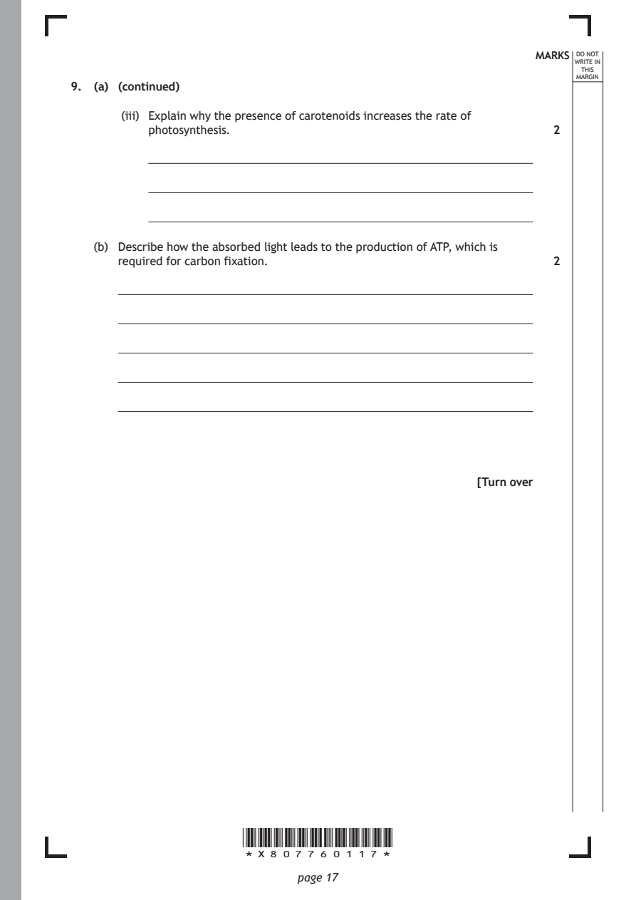
Selectable page text
MARKS _{W}^{D}_{R}^{O}_{I} _{T}^{N}OT
E IN
THIS
MARGIN
9. (a) (continued)
(iii) Explain why the presence of carotenoids increases the rate of
photosynthesis. 2
(b) Describe how the absorbed light leads to the production of ATP, which is
required for carbon fixation. 2
[Turn over
*X807760117*
page 17PDF page 18
Paper 2, Question 10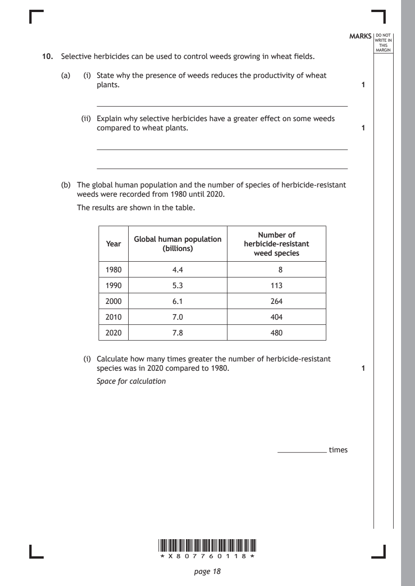
Selectable page text
MARKS _{W}^{D}_{R}^{O}_{I} _{T}^{N}OT
E IN
THIS
MARGIN
10. Selective herbicides can be used to control weeds growing in wheat fields.
(a) (i) State why the presence of weeds reduces the productivity of wheat
plants. 1
(ii) Explain why selective herbicides have a greater effect on some weeds
compared to wheat plants. 1
(b) The global human population and the number of species of herbicide-resistant
weeds were recorded from 1980 until 2020.
The results are shown in the table.
Number of
Global human population
Year herbicide‑resistant
(billions)
weed species
1980 4.4 8
1990 5.3 113
2000 6.1 264
2010 7.0 404
2020 7.8 480
(i) Calculate how many times greater the number of herbicide-resistant
species was in 2020 compared to 1980. 1
Space for calculation
����������������������� times
*X807760118*
page 18PDF page 19
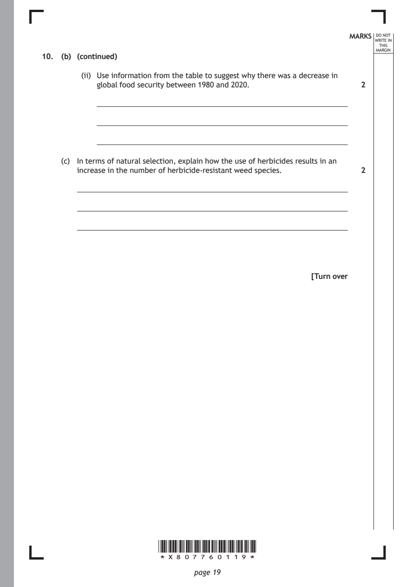
Selectable page text
MARKS _{W}^{D}_{R}^{O}_{I} _{T}^{N}OT
E IN
THIS
MARGIN
10. (b) (continued)
(ii) Use information from the table to suggest why there was a decrease in
global food security between 1980 and 2020. 2
(c) In terms of natural selection, explain how the use of herbicides results in an
increase in the number of herbicide-resistant weed species. 2
[Turn over
*X807760119*
page 19PDF page 20
Paper 2, Question 11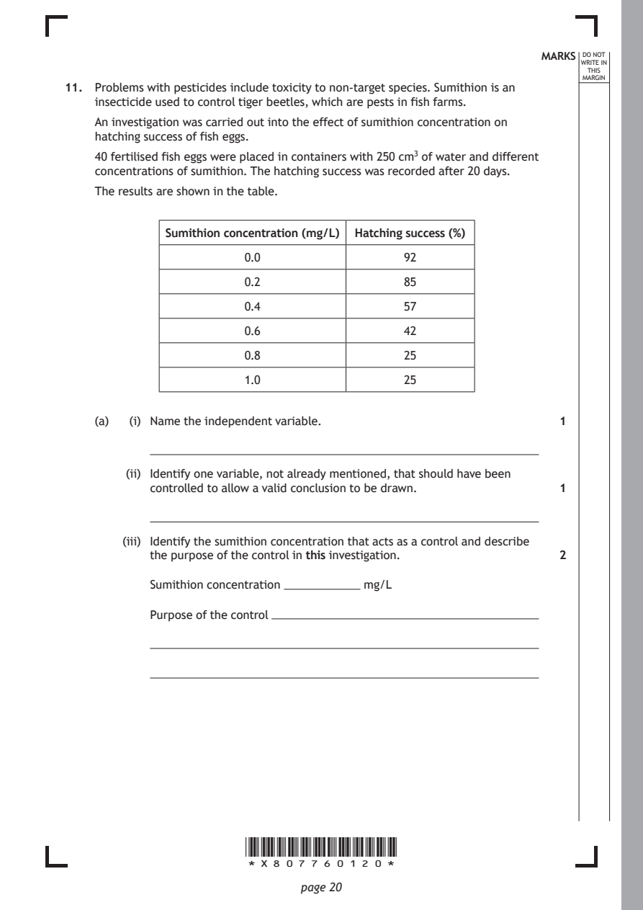
Selectable page text
MARKS _{W}^{D}_{R}^{O}_{I} _{T}^{N}OT
E IN
THIS
MARGIN
11. Problems with pesticides include toxicity to non-target species. Sumithion is an
insecticide used to control tiger beetles, which are pests in fish farms.
An investigation was carried out into the effect of sumithion concentration on
hatching success of fish eggs.
40 fertilised fish eggs were placed in containers with 250 cm³ of water and different
concentrations of sumithion. The hatching success was recorded after 20 days.
The results are shown in the table.
Sumithion concentration (mg/L) Hatching success (%)
0.0 92
0.2 85
0.4 57
0.6 42
0.8 25
1.0 25
(a) (i) Name the independent variable. 1
(ii) Identify one variable, not already mentioned, that should have been
controlled to allow a valid conclusion to be drawn. 1
(iii) Identify the sumithion concentration that acts as a control and describe
the purpose of the control in this investigation. 2
Sumithion concentration ����������������������� mg/L
Purpose of the control
*X807760120*
page 20PDF page 21
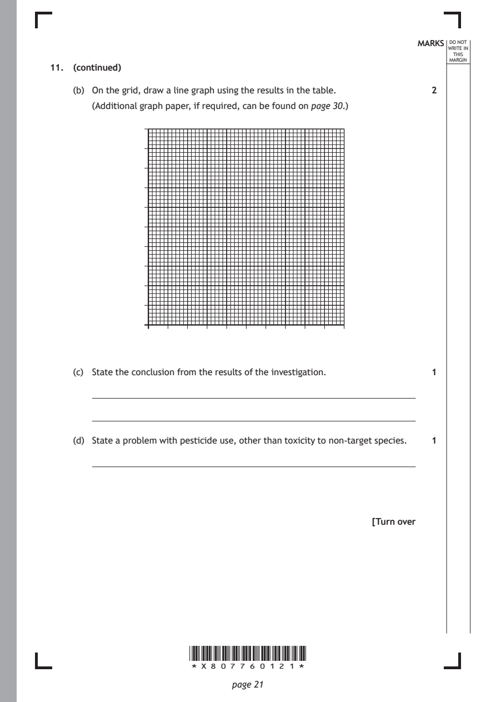
Selectable page text
MARKS _{W}^{D}_{R}^{O}_{I} _{T}^{N}OT
E IN
THIS
MARGIN
11. (continued)
(b) On the grid, draw a line graph using the results in the table. 2
(Additional graph paper, if required, can be found on page 30.)
(c) State the conclusion from the results of the investigation. 1
(d) State a problem with pesticide use, other than toxicity to non-target species. 1
[Turn over
*X807760121*
page 21PDF page 22
Paper 2, Question 12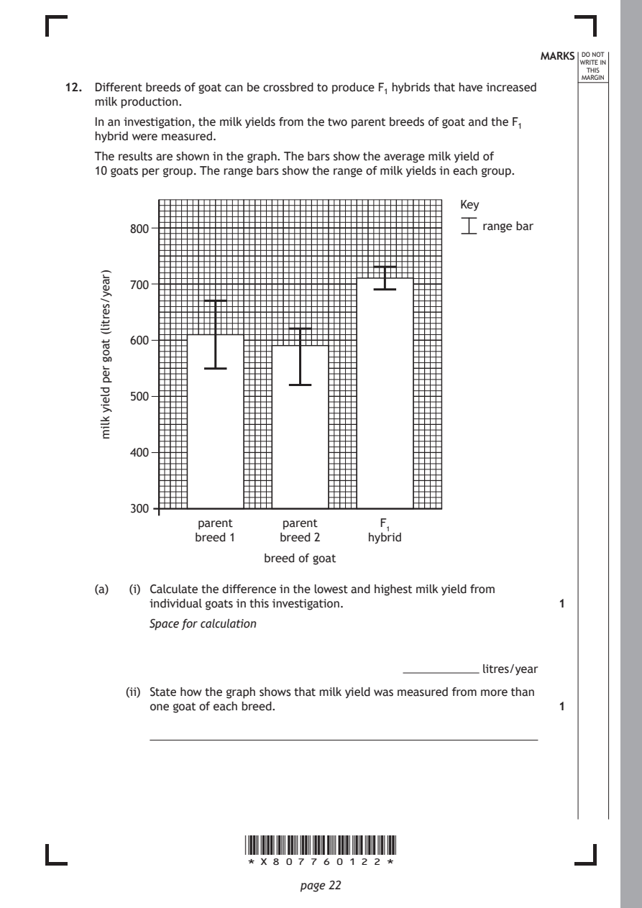
Selectable page text
MARKS _{W}^{D}_{R}^{O}_{I} _{T}^{N}OT
E IN
THIS
MARGIN
12. Different breeds of goat can be crossbred to produce F₁ hybrids that have increased
milk production.
In an investigation, the milk yields from the two parent breeds of goat and the F₁
hybrid were measured.
The results are shown in the graph. The bars show the average milk yield of
10 goats per group. The range bars show the range of milk yields in each group.
800
700
600
500
400
300
*X807760122*
page 22
)raey/sertil(
taog
rep
dleiy
klim
Key
range bar
parent parent F
breed 1 breed 2 hyb¹rid
breed of goat
(a) (i) Calculate the difference in the lowest and highest milk yield from
individual goats in this investigation. 1
Space for calculation
����������������������� litres/year
(ii) State how the graph shows that milk yield was measured from more than
one goat of each breed. 1PDF page 23
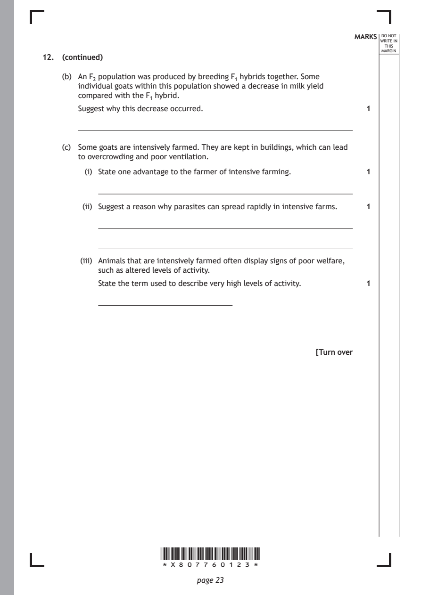
Selectable page text
MARKS _{W}^{D}_{R}^{O}_{I} _{T}^{N}OT
E IN
THIS
MARGIN
12. (continued)
(b) An F₂ population was produced by breeding F₁ hybrids together. Some
individual goats within this population showed a decrease in milk yield
compared with the F₁ hybrid.
Suggest why this decrease occurred. 1
(c) Some goats are intensively farmed. They are kept in buildings, which can lead
to overcrowding and poor ventilation.
(i) State one advantage to the farmer of intensive farming. 1
(ii) Suggest a reason why parasites can spread rapidly in intensive farms. 1
(iii) Animals that are intensively farmed often display signs of poor welfare,
such as altered levels of activity.
State the term used to describe very high levels of activity. 1
[Turn over
*X807760123*
page 23PDF page 24
Paper 2, Question 13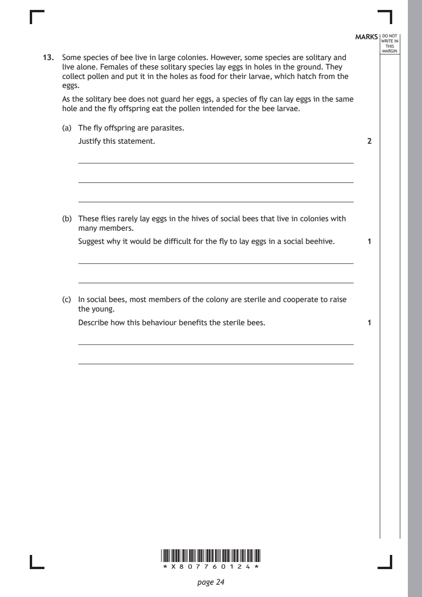
Selectable page text
MARKS _{W}^{D}_{R}^{O}_{I} _{T}^{N}OT
E IN
THIS
MARGIN
13. Some species of bee live in large colonies. However, some species are solitary and
live alone. Females of these solitary species lay eggs in holes in the ground. They
collect pollen and put it in the holes as food for their larvae, which hatch from the
eggs.
As the solitary bee does not guard her eggs, a species of fly can lay eggs in the same
hole and the fly offspring eat the pollen intended for the bee larvae.
(a) The fly offspring are parasites.
Justify this statement. 2
(b) These flies rarely lay eggs in the hives of social bees that live in colonies with
many members.
Suggest why it would be difficult for the fly to lay eggs in a social beehive. 1
(c) In social bees, most members of the colony are sterile and cooperate to raise
the young.
Describe how this behaviour benefits the sterile bees. 1
*X807760124*
page 24PDF page 25
Paper 2, Question 14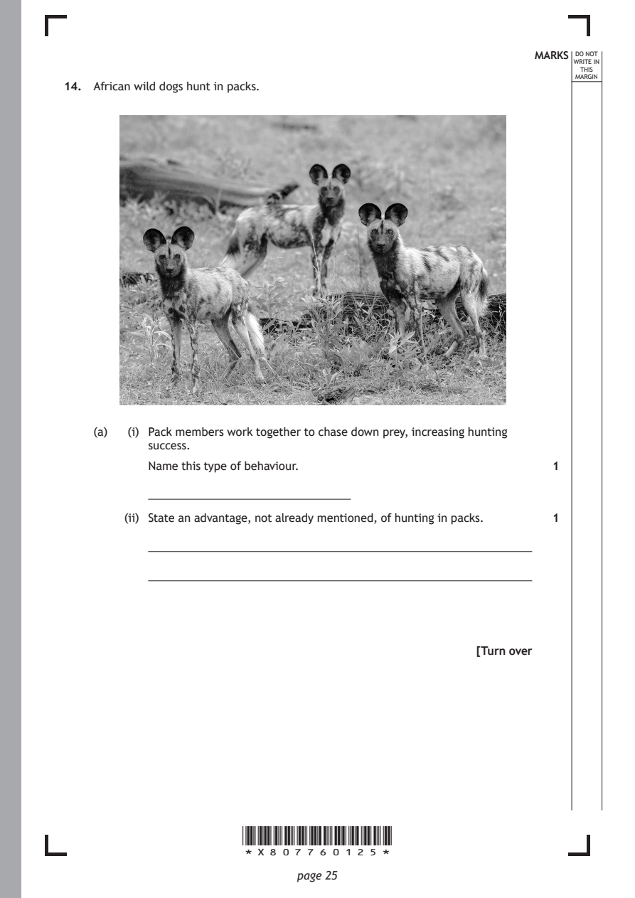
Selectable page text
MARKS _{W}^{D}_{R}^{O}_{I} _{T}^{N}OT
E IN
THIS
MARGIN
14. African wild dogs hunt in packs.
(a) (i) Pack members work together to chase down prey, increasing hunting
success.
Name this type of behaviour. 1
(ii) State an advantage, not already mentioned, of hunting in packs. 1
[Turn over
*X807760125*
page 25PDF page 26
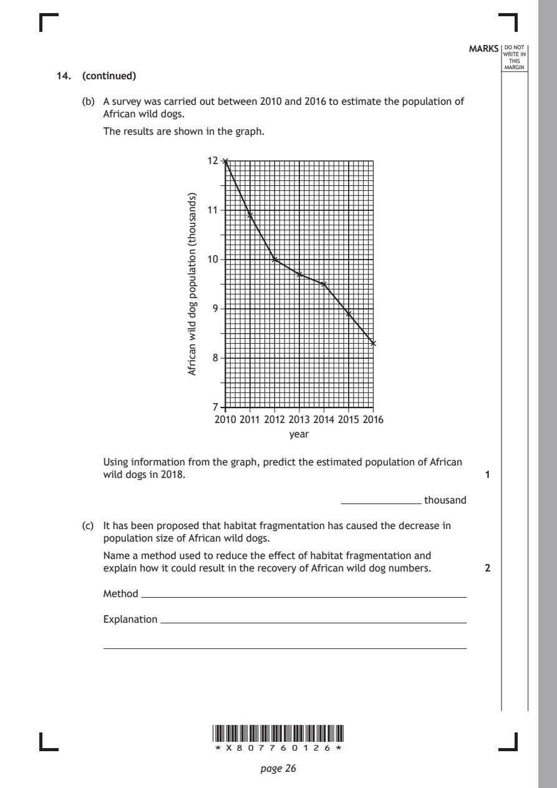
Selectable page text
MARKS _{W}^{D}_{R}^{O}_{I} _{T}^{N}OT
E IN
THIS
MARGIN
14. (continued)
(b) A survey was carried out between 2010 and 2016 to estimate the population of
African wild dogs.
The results are shown in the graph.
2010 2011 2012 2013 2014 2015 2016
year
*X807760126*
page 26
)sdnasuoht(
noitalupop
god
dliw
nacirfA
12
11
10
9
8
7
Using information from the graph, predict the estimated population of African
wild dogs in 2018. 1
���������������������������� thousand
(c) It has been proposed that habitat fragmentation has caused the decrease in
population size of African wild dogs.
Name a method used to reduce the effect of habitat fragmentation and
explain how it could result in the recovery of African wild dog numbers. 2
Method
ExplanationPDF page 27
Paper 2, Question 15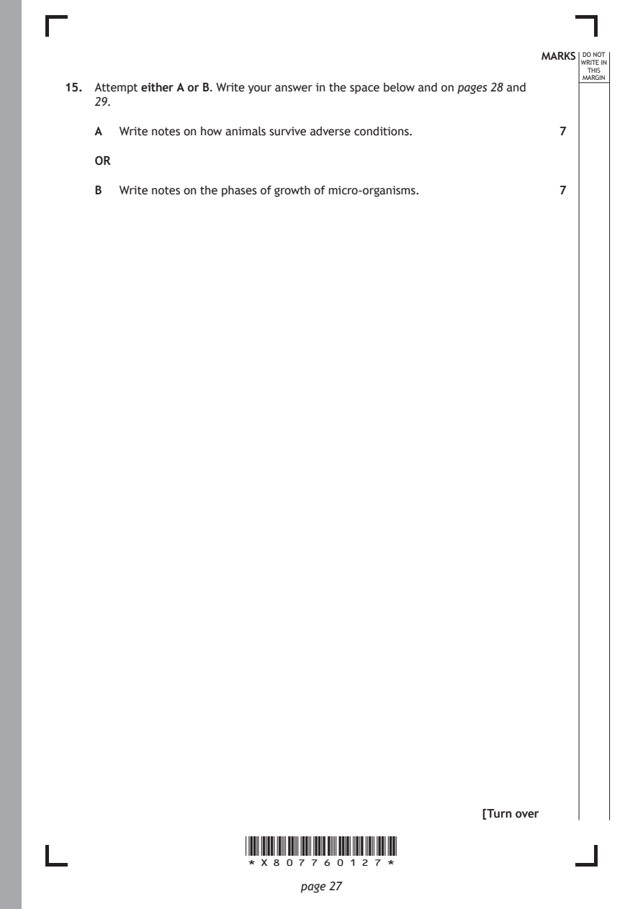
Selectable page text
MARKS _{W}^{D}_{R}^{O}_{I} _{T}^{N}OT
E IN
THIS
MARGIN
15. Attempt either A or B. Write your answer in the space below and on pages 28 and
29.
A Write notes on how animals survive adverse conditions. 7
OR
B Write notes on the phases of growth of micro-organisms. 7
[Turn over
*X807760127*
page 27PDF page 28
Selectable page text
MARKS _{W}^{D}_{R}^{O}_{I} _{T}^{N}OT
E IN
THIS
MARGIN
ADDITIONAL SPACE FOR ANSWER to question 15
*X807760128*
page 28PDF page 29
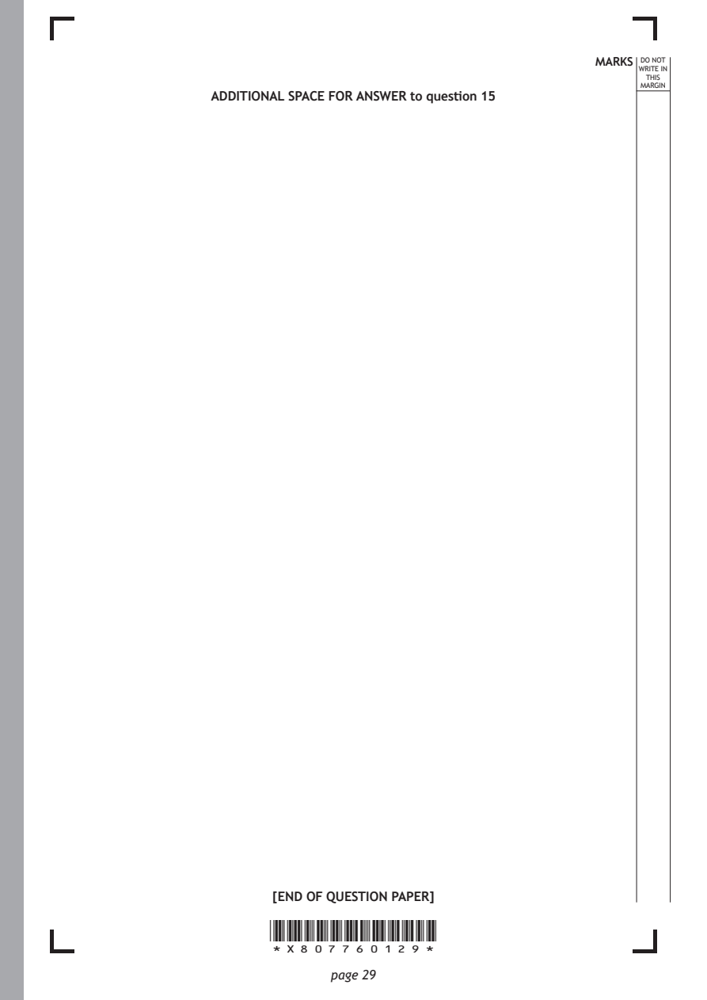
Selectable page text
MARKS _{W}^{D}_{R}^{O}_{I} _{T}^{N}OT
E IN
THIS
MARGIN
ADDITIONAL SPACE FOR ANSWER to question 15
[END OF QUESTION PAPER]
*X807760129*
page 29PDF page 30
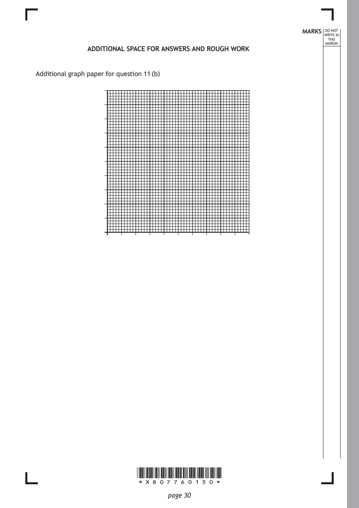
Selectable page text
MARKS _{W}^{D}_{R}^{O}_{I} _{T}^{N}OT
E IN
THIS
MARGIN
ADDITIONAL SPACE FOR ANSWERS AND ROUGH WORK
Additional graph paper for question 11 (b)
*X807760130*
page 30PDF page 31
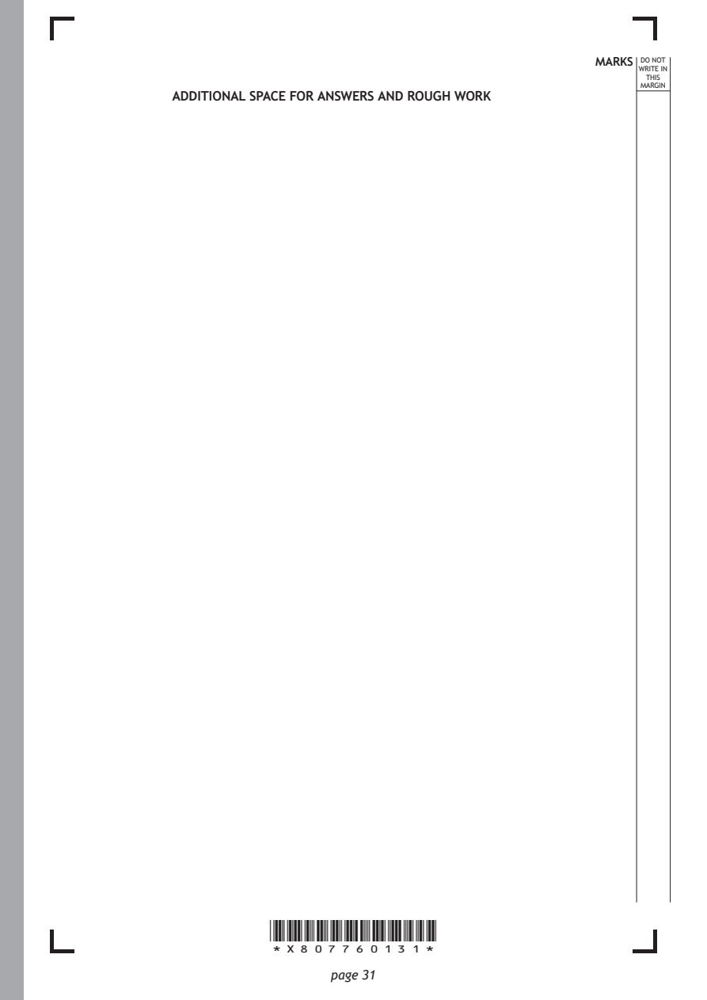
Selectable page text
MARKS _{W}^{D}_{R}^{O}_{I} _{T}^{N}OT
E IN
THIS
MARGIN
ADDITIONAL SPACE FOR ANSWERS AND ROUGH WORK
*X807760131*
page 31PDF page 32
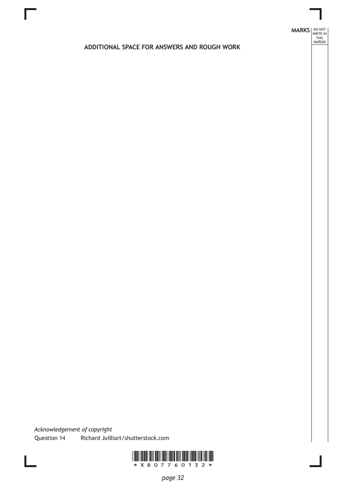
Selectable page text
MARKS _{W}^{D}_{R}^{O}_{I} _{T}^{N}OT
E IN
THIS
MARGIN
ADDITIONAL SPACE FOR ANSWERS AND ROUGH WORK
Acknowledgement of copyright
Question 14 Richard Juilliart/shutterstock.com
*X807760132*
page 32